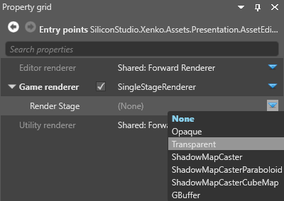

Scene renderers
Warning
Приносим свои извинения за неудобства. Для этой страницы нет перевода на русский язык. Она будет отображаться на английском языке.
Intermediate Designer
Scene renderers let you customize the collect and draw phases of the rendering. For more information about these stages, see Render features.
You select scene renderers in the entry points node properties.
For more information about selecting renderers, see the Graphics compositor page.
Note
Currently, all renderers must have a camera, or be a child of a renderer that has a camera. This applies even to renderers that don't necessarily use cameras, such as the single stage renderer (eg to render a UI).
Clear
Clears a frame, with a solid color.

Properties
| Property | Description |
|---|---|
| Clear flags | What to clear in the render frame (Color only, Depth only, or Color and depth) |
| Color | The color used to clear the color texture of the render frame. Only valid when Clear Flags is set to Color or Color and depth |
| Depth value | The depth value used to clear the depth texture of the render frame |
| Stencil value | The stencil value used to clear the stencil texture of the render frame |
Camera renderer
Uses Child to render a view from a camera slot. The render camera renderer takes the input from a camera in the scene so it can be displayed somewhere.
Properties
| Property | Description |
|---|---|
| Camera | Specify a camera slot to render from |
| Child | Specify a renderer for the camera (eg a forward renderer or a custom renderer) |
Scene renderer collection
The scene renderer collection executes multiple renderers (eg camera renderer, render texture, etc) in sequence. This lets you set multiple renderers for an entry point. You can add as many renderers to the collection as you need.
Note
Stride executes the renderers in list order.
To add a renderer to the collection, next to Children, click  (Add) and select the renderer you want to add.
(Add) and select the renderer you want to add.
Forward renderer
In a typical setup, the forward renderer renders almost everything in your scene. It renders, in order:
- opaque objects
- transparent objects
- post effects
The forward renderer is also where you set VR options. For more information, see Virtual reality.
You configure the forward renderer properties in the forward entry node.
Single stage renderer

Force aspect ratio scene renderer
Uses ForceAspectRatioSceneRenderer to force an aspect ratio and applies a letterbox if the ratio is different from the screen. Use this before the render camera.

| Property | Description |
|---|---|
| Child | Specify a renderer for the camera (eg a forward renderer or a custom renderer) |
| Fixed aspect ratio | The aspect ratio to force the view to |
| Force aspect ratio | Enable forced aspect ratio |
Render texture
Renders to a render texture, which you can display in your scene (eg to display security camera footage on a screen). For more information, see Render textures.
| Property | Description |
|---|---|
| Child | Specify a renderer for the camera (eg a forward renderer or a custom renderer) |
| Render texture | Specify a texture to render to |
Render mask

The render mask filters which groups are rendered. You can use it to only render particular models. For more information, see Render groups and render masks